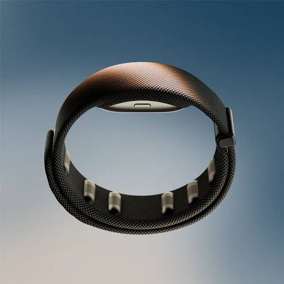
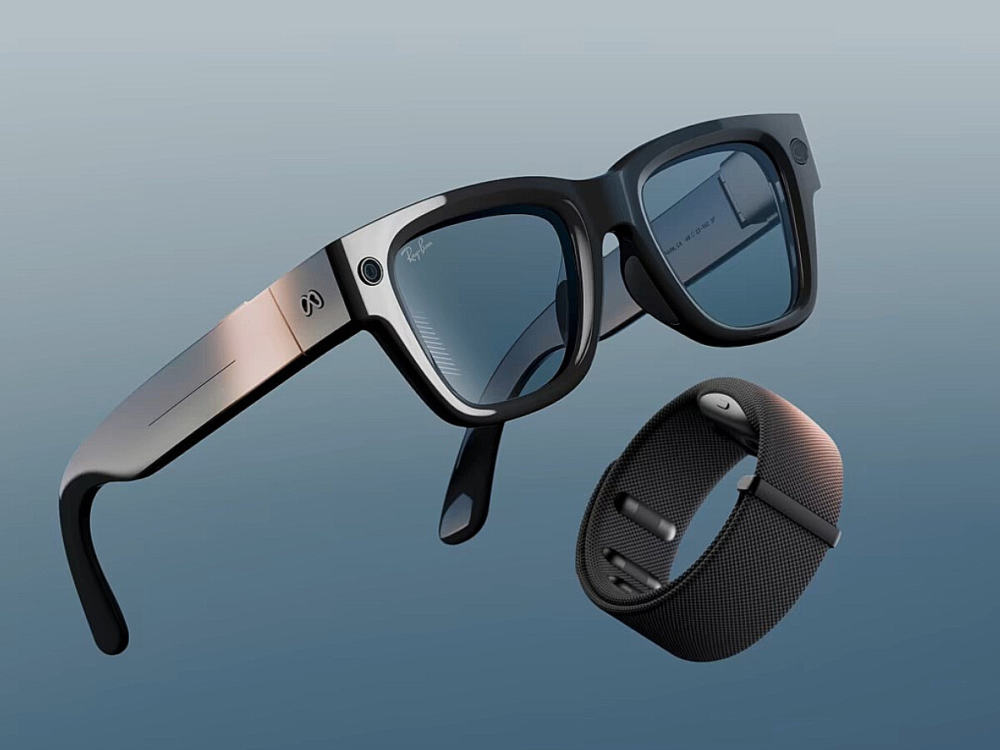

¿Qué es?

La Meta Neural Band es una pulsera presentada por Meta en septiembre de 2025. Se vende junto a las gafas inteligentes Meta Ray-Ban Display , que tienen una pequeña pantalla en el cristal derecho, y sirve para manejarlas sin tocar nada.
Lo especial es cómo funciona. No usa cámaras ni botones: tiene unos sensores de electromiografía de superficie (sEMG) que detectan las pequeñas señales eléctricas que mandan los nervios a los músculos del antebrazo cuando movemos los dedos. Un modelo de inteligencia artificial traduce esas señales en órdenes: seleccionar, volver atrás, desplazarse, subir el volumen…
Es decir: la pulsera "lee" la intención de movimiento en la muñeca. Basta con un gesto muy pequeño, incluso con la mano apoyada en la pierna o dentro de un bolsillo.
¿Por qué la he elegido?
Porque propone una forma de interactuar con la tecnología que no se parece a nada de lo que usamos ahora: ni teclado, ni ratón, ni pantalla táctil, ni voz. Estos son los beneficios que aporta:
Interacción discreta
Los gestos son tan pequeños que nadie a tu alrededor se da cuenta. No hace falta hablar en voz alta (como con un asistente de voz) ni levantar el brazo delante de la cara.
Funciona sin ver la mano
Otros sistemas de gestos necesitan una cámara que vea la mano. Esta pulsera mide la señal en la muñeca, así que funciona a oscuras, con la mano en el bolsillo o detrás de la espalda.
Menos cansancio
Con la realidad virtual y aumentada aparece el llamado "brazo de gorila": cansancio por mantener los brazos en el aire. Aquí la mano puede estar relajada en cualquier postura.
Accesibilidad
Como detecta la intención de movimiento, puede funcionar con movimientos muy débiles. Meta investiga su uso con personas con movilidad reducida en las manos, temblores o lesiones medulares.
Sin calibración personal
El modelo se entrenó con datos de miles de voluntarios, por lo que funciona "de serie" con personas nuevas sin tener que entrenarlo antes, que era el gran problema de los dispositivos EMG anteriores.
Privacidad
Al no usar cámaras ni micrófono para entender los gestos, no graba la imagen ni la voz de la persona que lo lleva ni de quienes están cerca.
Los gestos que reconoce
Todos se hacen con una sola mano y casi sin moverla. Son gestos que ya hacemos de forma natural, por lo que se aprenden en pocos minutos.
- Pellizco pulgar + índice: seleccionar (equivale al clic del ratón).
- Pellizco pulgar + corazón: volver atrás.
- Deslizar el pulgar sobre el índice: desplazarse por menús y listas, como en una pantalla táctil.
- Pellizcar y girar la muñeca: subir o bajar el volumen, como si giraras una ruleta.
- Escribir con el dedo sobre una superficie: la pulsera reconoce las letras y las convierte en texto para responder mensajes.
Ficha técnica
| Característica | Dato |
|---|---|
| Fabricante | Meta (división Reality Labs) |
| Presentación | Meta Connect, 17 de septiembre de 2025 |
| A la venta | 30 de septiembre de 2025 (Estados Unidos) |
| Precio | 799 $ (gafas Meta Ray-Ban Display + pulsera) |
| Tecnología | Electromiografía de superficie (sEMG) + inteligencia artificial |
| Batería de la pulsera | Hasta 18 horas |
| Resistencia al agua | IPX7 |
| Material | Vectran (una fibra muy resistente y flexible) |
| Pantalla de las gafas | 600 × 600 píxeles en el cristal derecho, campo de visión de unos 20° |

Evolución: de dónde viene
La Neural Band no aparece de la nada. Es el último paso de una larga búsqueda: conseguir que la forma de dar órdenes al ordenador se parezca cada vez más a cómo nos movemos de forma natural.
-
1968
El ratón
Douglas Engelbart presenta el ratón en la famosa "madre de todas las demos". Por primera vez se señala en la pantalla moviendo la mano, pero hace falta una mesa y un objeto que agarrar.
-
2007
Pantalla táctil multitáctil
El iPhone populariza los gestos con los dedos (pellizcar para hacer zoom, deslizar). Se elimina el intermediario, pero hay que tocar el cristal y mirarlo.
-
2010
Kinect
Microsoft lanza un sensor que reconoce el cuerpo entero con cámaras. Gestos sin tocar nada, pero con grandes movimientos, delante del sensor y con buena luz.
-
2014
Myo Armband
La empresa Thalmic Labs saca un brazalete con 8 sensores EMG: el antepasado directo de la Neural Band. Era una idea brillante, pero reconocía pocos gestos, fallaba bastante y había que calibrarlo para cada persona. Se dejó de fabricar en 2018.
-
2019
Meta compra CTRL-labs
Facebook (hoy Meta) adquiere CTRL-labs, una empresa que investigaba interfaces neuromotoras en la muñeca. De ese trabajo sale la tecnología de la pulsera.
-
2025
Meta Neural Band
Recoge lo mejor de todos: los gestos naturales de la pantalla táctil, el "sin tocar" de Kinect, la precisión de Leap Motion y la idea EMG de Myo, pero sin cámaras, sin calibración y con la mano en cualquier postura.
Relación con la Interacción Persona-Ordenador
Wearable
Es un ordenador corporal: se lleva puesto todo el día, como un reloj, y está disponible en cualquier momento sin tener que sacar nada del bolsillo.
Realidad aumentada
Es el dispositivo de entrada de unas gafas que añaden información (mensajes, mapas, subtítulos) sobre el mundo real. Resuelve un problema clásico de la RA: cómo interactuar con lo que ves.
Dispositivos "para todos"
Igual que los licornios, las varillas bucales o los pulsadores, abre una vía para personas que no pueden usar un teclado o un ratón, porque solo necesita una señal muscular mínima.
Pero no todo es perfecto
- Al principio solo se vende en Estados Unidos y es cara.
- Solo funciona con las gafas de Meta: es un ecosistema cerrado.
- Recoge datos biométricos del cuerpo, lo que plantea dudas sobre privacidad.
- Los gestos hay que aprenderlos: al principio no son tan "invisibles" como un clic.